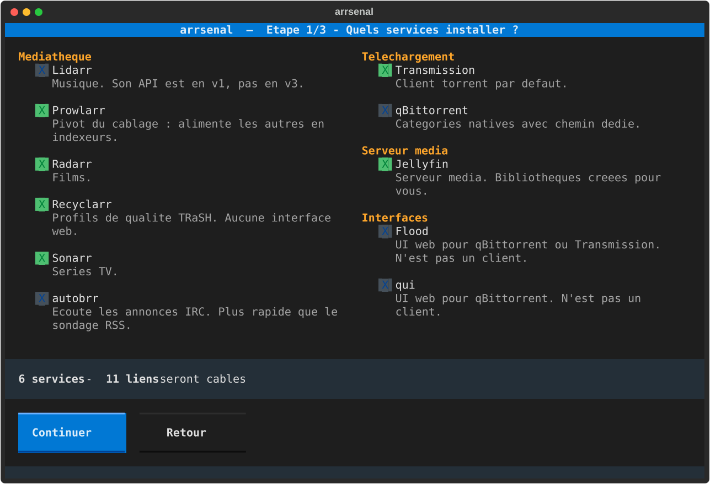
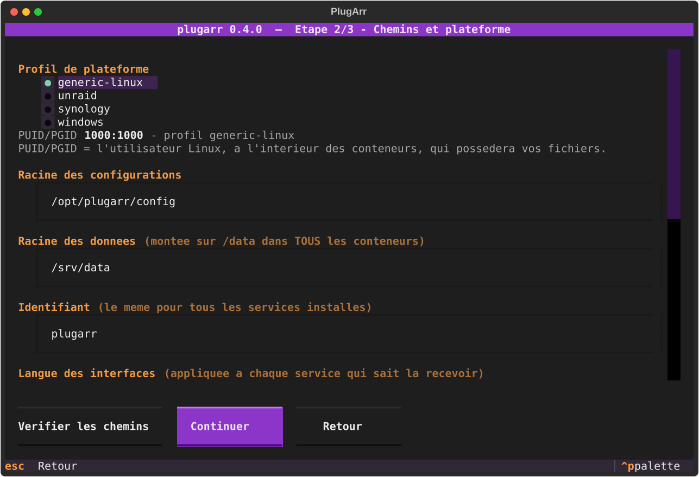
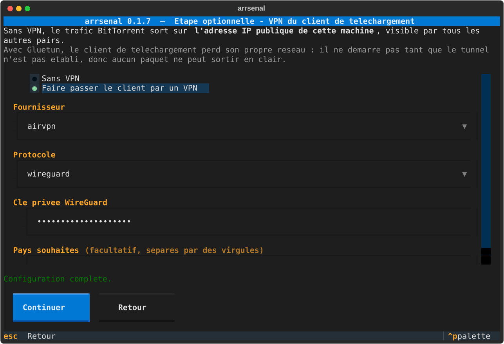
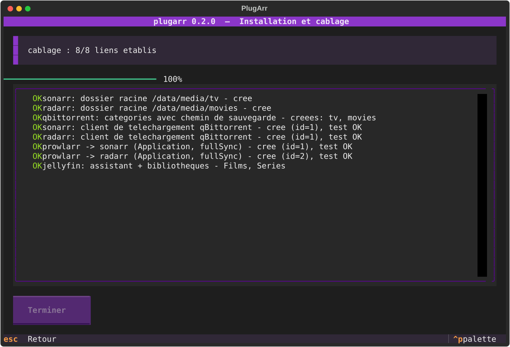
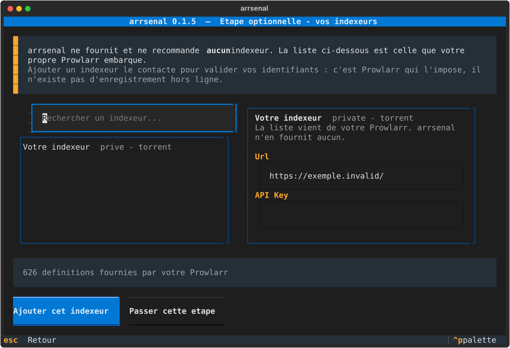
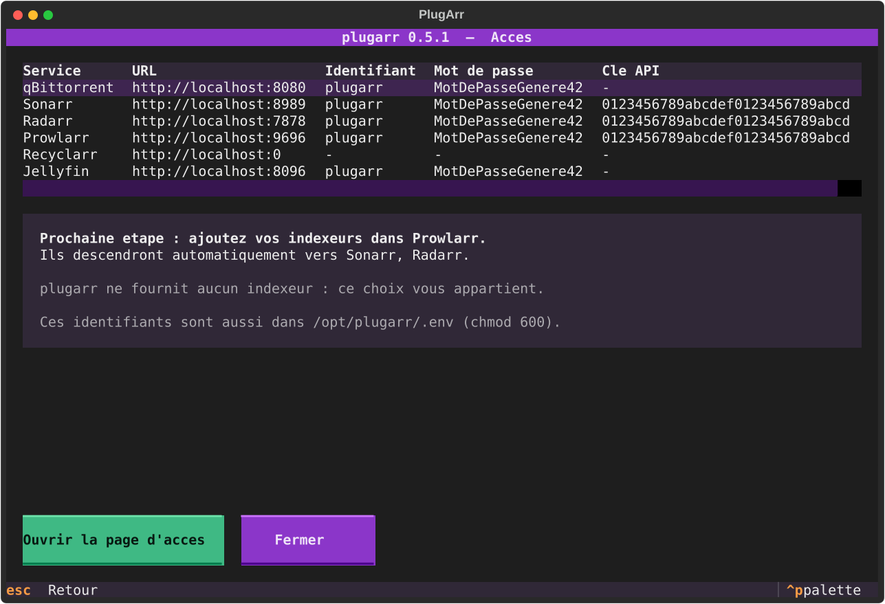

Connecter · Automatiser · Optimiser
Deploie et cable une stack media complete. Une commande, zero clic dans huit interfaces web.
$ plugarr
# ou, pour un script ou une CI :
$ plugarr install --yes --data-root /srv/dataLe probleme
Ouvrir chaque interface, copier une cle API, la coller dans une autre, recommencer, se tromper de port, et decouvrir trois jours plus tard que les imports recopient 40 Go au lieu de faire un lien. PlugArr automatise cette partie-la.
indexeurs pousses, fullSync client de telechargement et notification d'import
Chaque lien est relu depuis l'API cible apres creation. Le rapport final ne dit pas « j'ai envoye un POST », il dit « le lien existe ».
| Outil | Deploiement | Cablage inter-apps | Profils qualite |
|---|---|---|---|
| DockSTARTer | oui | non | non |
| Saltbox | oui | partiel | non |
| Recyclarr / Configarr | non | non | oui |
| PlugArr | oui | oui | oui (via Recyclarr) |
Ce qui est cable automatiquement
La liste complete, ligne par ligne, vit dans le README. Les deux clients de telechargement peuvent coexister : chaque *arr est rattache aux deux, et le routage s'adapte tout seul — qBittorrent a des categories natives, Transmission n'en a pas.
Le piege que tout le monde rate
Monter /downloads et /media separement donne deux systemes de fichiers vus depuis le conteneur. Les hardlinks deviennent impossibles. PlugArr impose un montage unique dans tous les conteneurs.
${DATA_ROOT}/ -> /data (dans TOUS les conteneurs)
├── torrents/
│ ├── movies/
│ ├── tv/
│ ├── music/
│ └── .incomplete/
└── media/
├── movies/ <- dossier racine Radarr + bibliotheque Jellyfin
├── tv/ <- dossier racine Sonarr + bibliotheque Jellyfin
└── music/ <- dossier racine Lidarr + bibliotheque Jellyfin
Le preflight ne se contente pas de l'esperer : il cree un vrai hardlink entre torrents/ et media/, et vous dit si ca a marche.
L'assistant
Toutes les captures sont generees automatiquement, sans terminal ni Docker, et versionnees : une regression visuelle apparait dans le diff d'une pull request.






Installation
Telechargez plugarr.exe, ouvrez un terminal dans le dossier de telechargement, et lancez-le. Seul Docker Desktop est necessaire : l'executable embarque son propre interpreteur. 20 Mo, environ une seconde et demie au demarrage.
> .\plugarr.exeWindows SmartScreen peut afficher un avertissement au premier lancement : le binaire n'est pas signe, une signature de code coutant plusieurs centaines d'euros par an. « Informations complementaires », puis « Executer quand meme ».
Docker Engine avec le plugin docker compose, et Python 3.12 ou plus recent. Quatre profils : windows, generic-linux, unraid, synology. Celui de la machine est preselectionne.
$ pipx install git+https://github.com/yannickuhrig1/plugarr
$ plugarr # assistant interactif
$ plugarr scan # detecte une stack existante
$ plugarr adopt # la cable sans rien recreer
$ plugarr serve # page d'administration
$ plugarr doctor # diagnostique une installation
$ plugarr uninstall # ne touche jamais a vos mediasLe paquet n'est pas encore publie sur PyPI.
Le catalogue
Prowlarr Sonarr Radarr Lidarr Transmission qBittorrent Jellyfin Silo experimental autobrr Recyclarr Flood UI qui UI Gluetun VPN optionnel
Mots de passe de 20 caracteres et cles API tires par la source cryptographique de Python, environ 125 bits d'entropie. Aucun mot de passe par defaut n'existe.
Le client de telechargement ne demarre pas tant que Gluetun n'est pas healthy. Verifie avec des identifiants volontairement faux : qBittorrent ne quitte jamais l'etat created.
plugarr.log contient chaque etape et la trace complete d'une erreur. Les mots de passe et cles API y sont remplaces par leur nom avant ecriture.
PlugArr ne reimplemente pas les TRaSH Guides : il installe Recyclarr, choisit un template officiel, et lance la premiere synchronisation.
A lire avant de commencer
PlugArr ne fournit, n'heberge et ne recommande aucun indexeur, aucun tracker, aucun contenu, et n'en preconfigure aucun. Aucune liste n'est livree avec le code : celle de l'assistant vient de votre propre Prowlarr. C'est un outil d'automatisation de mediatheque personnelle. Ce que vous y branchez, et sa legalite, vous regardent.